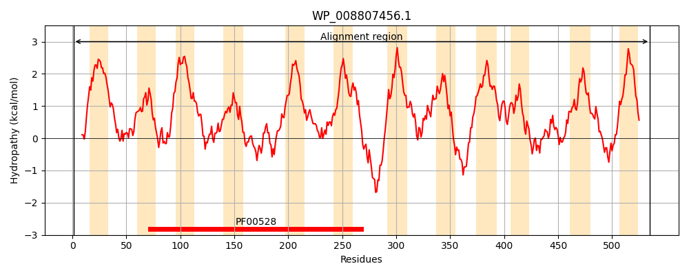
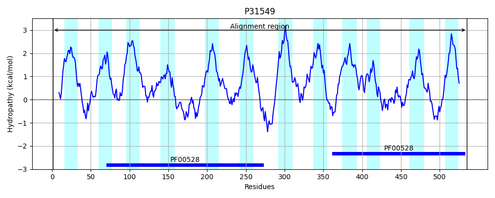
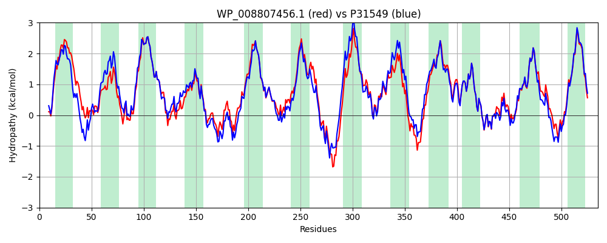

Hit Accession: P31549
Hit TCID: 3.A.1.19.1
Hit Description: gnl|BL_ORD_ID|9778 gnl|TC-DB|P31549|3.A.1.19.1 Thiamine transport system permease protein thiP - Escherichia coli.
Mach Len: 535
e:0.000000
Query TMS Count : 12
Hit TMS Count: 12
TMS-Overlap Score: 11.250000
Predicted Substrates:CHEBI:9533;thiamine(1+) monophosphate, CHEBI:9532;thiamine(1+) diphosphate, CHEBI:9530;thiamine(1+)
BLAST Alignment:
Score: 2259 , Bit scores: 874 bits, E-value: 0.0e+00, Alignment length: 535, Percentage identity: 83
Query: 1 MATRRQPLNLRGLLPGLFAATLLCAVALAAFLALWFSAPGAGWQSVFSDSYLWHVVRFSFWQASLSALFSVGPAIFLARALYRRRFPGRTLLLRLCAMTLILPVLVAVFGILSVYGRQGWLASLFHALGWQWDFSPYGLQGILLAHVFFNMPMATRLLLQALESIPGEQRQIAAQLGMRGYAFFRLVEWPWMRRHIPAVAALIFMLCFASFATVLSLGGGPKATTIELAIYQALSFDYDPARAAMLALIQMLCCLALVLLSQRLSKAVAIGVSHVRGWRDPDDRLHSRLSDGLLIGAALLLLLPPLLAVIVDGINRNMLNVLAQPALWQALSTSLRIAIAAGLLSVTLTMMLLWSSRELRARQRPLAGQAMELSGMLILAMPGIVLATGFFLLLSNSVGLPESADGIVIFTNALMAIPYALKVLENPMRDVTARYSMLCQSLGIEGFTRLRVVELRALRRPLAQALAFACVLSIGDFGVVALFGNEAFRTLPFYLYQQIGAYRSQDGAVTALLLLLLCFLLFTLIEKLPGRDAKT 535
MATRRQPL L+PG+ A TL+ AVALAAFLALW++AP W +V+ DSYLWHVVRFSFWQA LSAL SV PAIFLARALYRRRFPGR LLRLCAMTLILPVLVAVFGILSVYGRQGWLA+L +LG +W FSPYGLQGILLAHVFFN+PMA+RLLLQALE+IPGEQRQ+AAQLGMR + FFR VEWPW+RR IP VAALIFMLCFASFATVLSLGGGP+ATTIELAIYQALS+DYDPARAAMLAL+QM+CCL LVLLSQRLSKA+A G + ++GWRDPDDRLHSR+ D +LI ALLLLLPPLLAVIVDG+NR + VLAQP LWQAL TSLRIA+AAG+L V LTMMLLWSSRELRARQ+ LAGQ +E+SGMLILAMPGIVLATGFFLLL+N++GLP+SADGIVIFTNALMAIPYALKVLENPMRD+TARYSMLCQSLGIEG++RL+VVELRAL+RPLAQALAFACVLSIGDFGVVALFGN+ FRTLPFYLYQQIG+YRSQDGAVTAL+LLLLCFLLFT+IEKLPGR+ KT
Sbjct: 1 MATRRQPLIPGWLIPGVSATTLVVAVALAAFLALWWNAPQDDWVAVWQDSYLWHVVRFSFWQAFLSALLSVIPAIFLARALYRRRFPGRLALLRLCAMTLILPVLVAVFGILSVYGRQGWLATLCQSLGLEWTFSPYGLQGILLAHVFFNLPMASRLLLQALENIPGEQRQLAAQLGMRSWHFFRFVEWPWLRRQIPPVAALIFMLCFASFATVLSLGGGPQATTIELAIYQALSYDYDPARAAMLALLQMVCCLGLVLLSQRLSKAIAPGTTLLQGWRDPDDRLHSRICDTVLIVLALLLLLPPLLAVIVDGVNRQLPEVLAQPVLWQALWTSLRIALAAGVLCVVLTMMLLWSSRELRARQKMLAGQVLEMSGMLILAMPGIVLATGFFLLLNNTIGLPQSADGIVIFTNALMAIPYALKVLENPMRDITARYSMLCQSLGIEGWSRLKVVELRALKRPLAQALAFACVLSIGDFGVVALFGNDDFRTLPFYLYQQIGSYRSQDGAVTALILLLLCFLLFTVIEKLPGRNVKT 535 | Protein Hydropathy Plots: |
|---|
|  |  |
Pairwise Alignment-Hydropathy Plot:
|
|---|
|  |